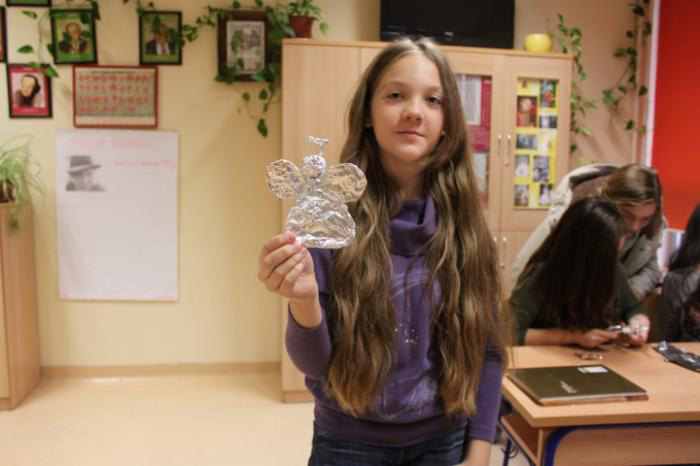
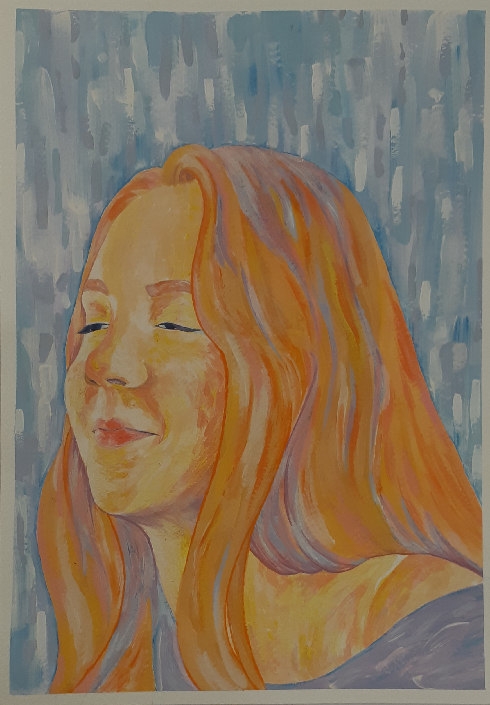
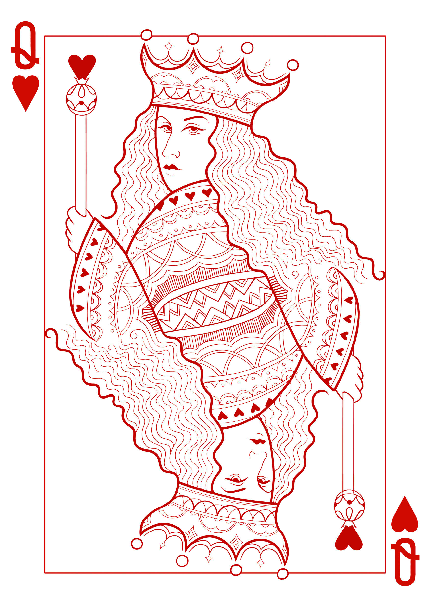

Kao što sam i rekla na naslovnoj stranici, zovem se Bruna i studentica sam Grafičkog fakulteta u Zagrebu. Zagreb je grad s kojim sam se u zadnjih par godina imala priliku dosta upoznati jer sam u njemu pohađala i Srednju školu primijenjene umjetnosti i dizajna. Išla sam na grafički odjel tako da sam se tamo po prvi put susrela sa programima poput Adobe Photoshopa i Ilustatora i svim njihovim čarima. Iz osnovne škole sam došla sa stavom da apsolutno ne volim računala i bilo što vezano uz njih, ali promijenila sam mišljenje kada sam uz pomoć njih napravila neke od svojih prvih radova. Projekt u koji sam dosad uložila najviše svog truda i vremena bio je moj završni rad u srednjoj školi, a radilo se o izradi serije filmskih plakata zbog kojih sam dosta vremena morala provoditi u Ilustratoru, iako smo si do tad bili na vi. Kad sam bila mala, voljela sam crtati i izrađivati svakakve ukrase pa sam pokušala svoju ljubav prema kreativi prenijeti i na potencijalno buduće zanimanje u čemu se nadam da će mi uvelike pomoći upravo ovaj i svi ostali predmti na fakultetu.
  - radionice u školi
- koloristički autoportret
- ilustracija igraće karte